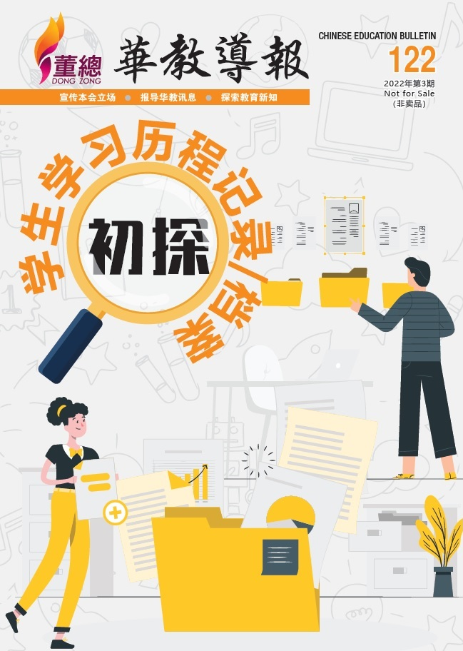

编者语

2021年度董总会员代表大会因疫情之故延迟至年末进行。今年3月9日，随着我国首相宣布4月1日起新冠疫情由大流行（pandemic）过渡到地方性流行（endemic）疾病，日常事务逐渐回归疫情前的常态，故2022年度董总会员代表大会在6月25日，得以实体形式按原定日期进行。大会共获13个属会45位代表出席，并通过了10项大会提案。
同时基于疫情逐渐平伏，各类的实体活动也变得活络，在6月至8月期间，共接待了几项实体的拜访与交流活动：留台联总莅访交流、拉曼理工大学莅访董教总交流、教育部副部长拿督马汉顺莅访交流、民主行动党秘书长陆兆福率团莅访交流等（因版位有限，部分报导收录在电子书）。下半年本会也将有数次组团出访其他单位的活动，是自2020年爆发新冠疫情后本会正式组团跨州参访，具体内容敬请留意下期本刊的活动报导。
本期焦点聚焦在“学生学习历程”的探讨，随着素养教育日益盛行，学术成绩已不再是评价学生的主渠道，学生在德体群美劳的各个方面的发展也逐渐被重视，进而延申出学生学习历程档案，用以记录学生在学习生涯中的发展轨迹。另外，本期特别策划为“华教论坛”，此为本会新办的活动，目的是要加强及凝聚华教同道认识、解决及开拓新形势下的华教运动与事业所面对的问题。
本期延续上期华教导报的内容，在这期刊登华教人物口述历史-华教元老陈玉康（下篇）。其他精彩内容包括：“2022年全国华文独中校长交流会”、“马来西亚华文独中校长与中国校长线上教育研讨会”、“跨阅2.0：学与教的深耕与实践”、“全国华文独中2019年毕业生升学概况调查报告”等。